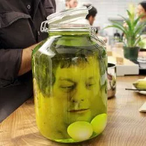

GOLOVA

It is the best one...
Bro... this dish have all u need: brain, spinal cord, the strongest bones (most calcium). And you will be surprised, but it is so tasty... It worth it 100%
Ingredients
- human - 1 peace
- vinegear - 1 l
- sugar - 500 g
Steps
- cut head off the cold body (You can use the same body from the previous recipe)
- put the head to the jar
- put the vinegear
- put the sugar
- mix it :)
- put the jar in the refrigerator or any other cold place (for example, a basement) for one week
- Enjoy the meal :)